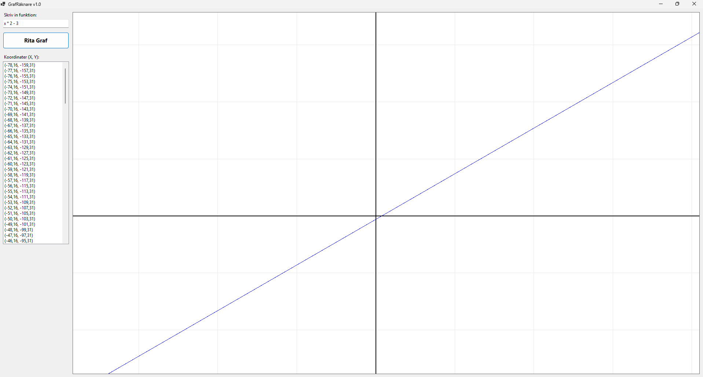

01
Simple Graph Calculator
Simple Graph Calculator is a desktop graphing calculator built in C# with Windows Forms. Type a function of x, like 2x^2 - 3, and it draws the graph on an interactive grid you can zoom and pan. Expressions are evaluated by a custom parser, built to learn parsing, coordinate transformations and GUI programming.
View on Github